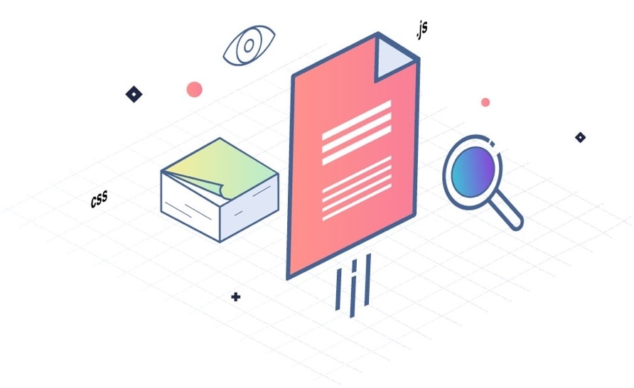
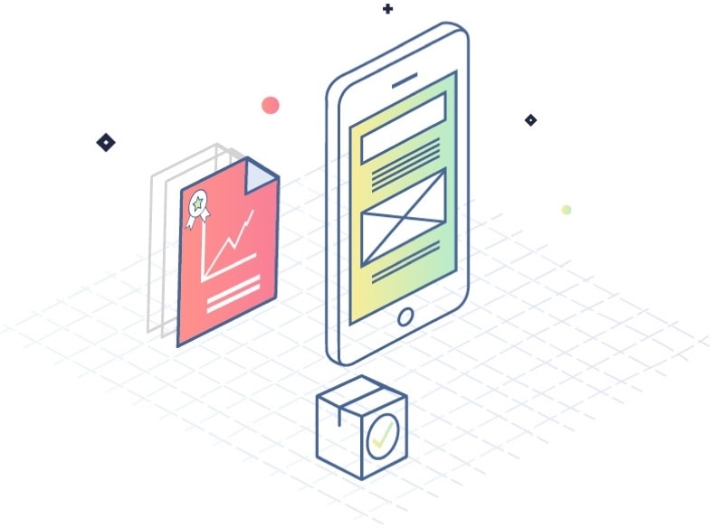

Etape 01
Compréhension du problème à résoudre
Si vous avez une idée d’app, c’est qu’implicitement vous pensez avoir identifié un problème que le mobile pourra résoudre. Grâce à notre expertise en product thinking, nous sommes capables de vous accompagner pour bâtir un projet mobile avec une véritable proposition de valeur.
Etape 02
Identification des personas
Il est indispensable avant de se lancer dans un projet mobile d’avoir identifié les personas, ce sont des représentations fictives de vos utilisateurs « idéaux ». Vous pourrez ainsi bâtir une application mobile qui leur soit parfaitement adaptée.


Etape 03
Conception d’interfaces clés
Nos UI/UX Designers, en lien avec nos chefs de projets fonctionnels, sont au fait des dernières tendances en terme ergonomiques dans le domaine du Mobile. Ils vous accompagneront donc la réalisation des interfaces de votre projet.
Etape 04
Développement d’une version
Nous mettons en place une équipe composée d’un architecte, d’un chef de projets technique, et d’ingénieurs mobiles et back-end afin de réaliser le développement de votre application mobile.

